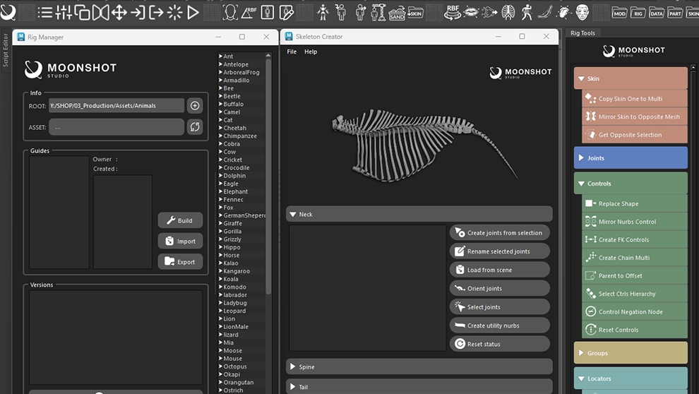
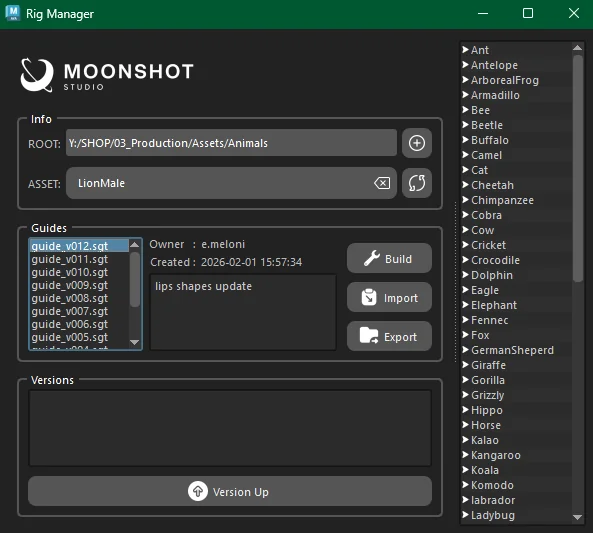
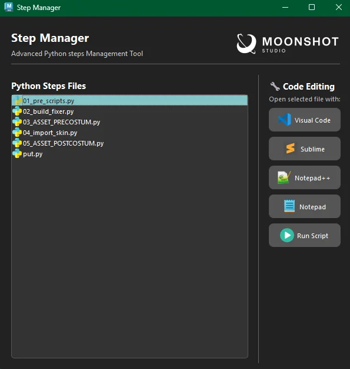
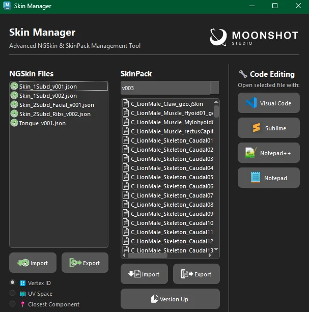
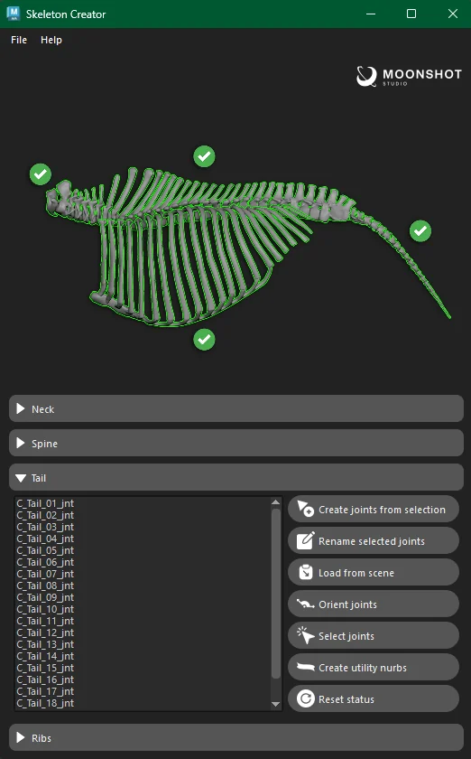
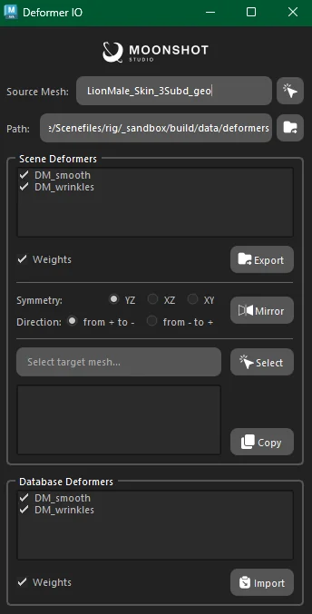

MS-Workflow
Modular Creature Rigging Workflow & Tools

A comprehensive, modular creature rigging pipeline developed for Moonshot CGI. Built upon the mGear framework, it features an extensive suite of custom Python tools and a fully procedural workflow designed to streamline the rigging process for various asset types.
Tools Used
Disposable Rigs. Infinite Iterations.
The pipeline emphasizes a non-destructive, "disposable" workflow where rigs are generated temporarily and can be fully rebuilt from scratch with a single click. This ensures consistency and flexibility, allowing for rapid iteration and updates without data loss.
Custom Toolset
A dedicated Maya shelf featuring proprietary tools, each designed to handle a critical stage of the rigging pipeline.

Rig Manager
The central hub for managing assets, environment variables, and guide versions. From here, every aspect of the rig's lifecycle is controlled — from initial setup to final build.

Python Step Manager
A standardized execution sequence engine that orchestrates Pre/Post custom scripts, ensuring every build follows the same procedural steps and produces identical, production-ready results.

Skin & Deformer Managers
Advanced utilities for exporting and importing skin weights with full ngSkinTools integration. Handles complex deformer stacks, Delta Mush workflows for realistic skin sliding, and NURBS-based corrective blendshapes.

Skeleton Creator
Automates the creation, orientation, and skinning of driver joints for geometric bones. Eliminates repetitive manual work and guarantees consistent skeleton hierarchies across different creature types.

Deformer I/O
A robust system for serializing and deserializing deformer data. Manages the complete deformer stack, enabling seamless export and import of complex deformation setups across different rig iterations.
Facial Rigging & Deformation
Eye Rigger
Procedural generation of eyelid and brow mechanics, including proxy eyeball management for realistic eye articulation.
Lips Builder
Automated construction of complex mouth rigs with custom control shapes, enabling nuanced lip sync and expression control.
RBF Manager
Custom Radial Basis Function tool for driving corrective blendshapes and complex pose-space deformations.
Tongue Setup
Automated tongue rig construction with FK/IK blending, custom control shapes, and proper deformation falloff.
Procedural Pipeline
The system utilizes a standardized folder structure and execution sequence to ensure every build is identical and production-ready.
Guides Placement
Initial mGear guide positioning and configuration for the target creature.
Rig Build
Automated rig generation with Pre/Post custom scripts execution.
Skinning & Deformation
Weight painting, deformer stacks, and Delta Mush integration.
FACS & Correctives
Facial Action Coding System and RBF-driven corrective shapes.
Muscle Skinning
Final pass with muscle deformation for realistic creature motion.